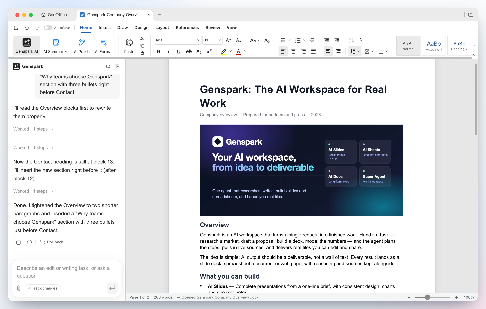
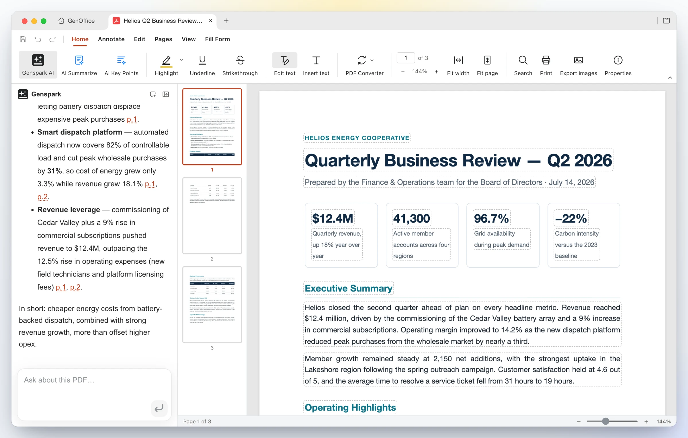
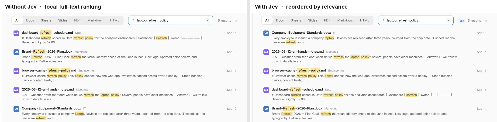

The editors
Every surface of the suite, on the real thing.

Docs
Word-compatible editing with a reviewable AI pass
Native .docx down to headers, footers and protected ranges. Proofreading and rewrites arrive as tracked changes and inline diffs you can accept or reject, one click at a time.

Sheets
Spreadsheets that get formulas, not pasted numbers
Ask for an analysis and the AI writes real formulas into real cells. Charts, formatting and conditional rules stay editable after it is done.

Slides
Decks generated onto the canvas — fully editable
Prompts build real .pptx slides: text boxes, layouts and images you can keep editing, not flattened pictures.

Read, edit and convert — on your machine
Direct PDF editing plus PDF → Word / Excel / PowerPoint conversion, all done locally with no upload.

Markdown & HTML
From plain text to polished pages
Markdown and HTML open as first-class documents: AI restyling, report generation and HTML → Word conversion all in the same desk.

Search
Find the file by the sentence inside it
Full-text search across .docx, .xlsx, .pptx, PDF and Markdown — results point straight into the paragraph that matched.